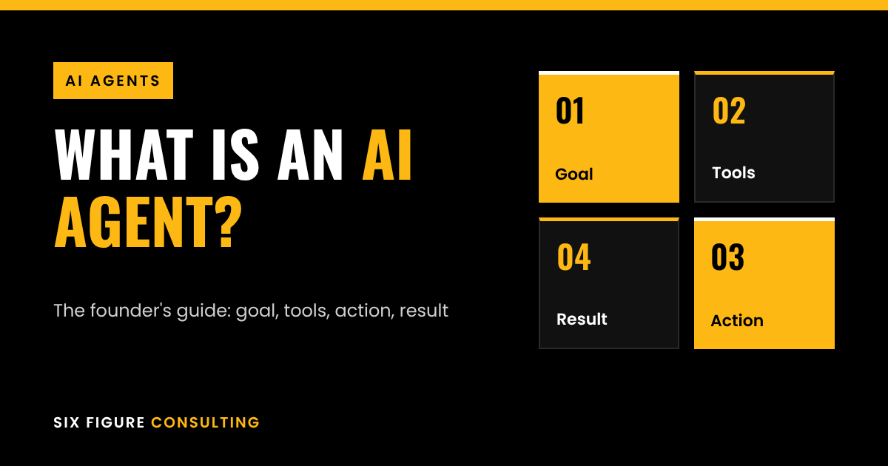

An AI agent is software that takes a goal, decides what steps to take, uses tools such as your CRM, inbox and calendar to carry them out, and checks the result. A chatbot answers questions. An agent does the work. For a business, that means tasks like qualifying leads, following up and booking meetings can run without someone doing each step by hand.
Ask three people what an AI agent is and you will get three answers. Half the market uses the word for anything with a language model inside. This guide gives you a definition you can use when you are deciding whether to build an agent, buy one, or ignore the hype.
What is an AI agent, in plain English?
An AI agent has four parts:
- A goal. For example: "Qualify every inbound lead and book a call if they fit."
- Tools. Access to systems it can read from and write to: your CRM, inbox, calendar or a database.
- A reasoning step. A language model that decides what to do next based on what it sees.
- A loop. It acts, looks at the result, and decides whether to continue, retry, or stop and ask a human.
The loop is the whole point: goal, tools, action, result, and back around. Without it you just have a clever text box.
How does an AI agent work?
Take a services business. A new enquiry arrives through the website form. An agent could handle it like this:
- Read the form and the company's website.
- Check your qualification rules (industry, size, location).
- Look up whether the contact already exists in your CRM.
- Draft a reply and either send it or pass it to you for approval.
- If the lead fits, offer calendar slots and log everything.
None of this is magic. Each step is small. What makes it an agent is that the software chooses the order and handles the branches (existing contact, bad fit, no reply) instead of following one fixed path.
AI agent vs chatbot vs workflow automation
This is where most founders get confused, so here is the short version:
- Chatbot: responds to messages. It usually cannot do anything outside the chat window.
- Workflow automation: follows a fixed set of steps you defined in advance. Great for predictable tasks, but it breaks when the input is messy.
- AI agent: works toward a goal and decides the steps. It copes with messy inputs, but it needs guardrails because it has more freedom.
In practice the best setups mix all three: fixed automation for the predictable parts, an agent for the judgment calls, and a human for anything high-stakes.
AI agent examples for business
These are the use cases we see working for founders and small teams:
- Lead research and outreach prep. The agent finds a prospect's recent activity, summarises it and drafts a first line for you to approve.
- Inbound qualification and booking. It reads enquiries, scores them against your criteria, replies and books calls.
- Follow-ups. It chases proposals and unanswered emails on a schedule, with context from the last conversation.
- Support triage. It answers common questions from your documentation and hands the rest to a person with a summary.
- Internal admin. It updates CRM fields after calls, files documents and prepares weekly reports.
Notice what is missing: anything where a single wrong answer is expensive and cannot be undone. Start where mistakes are cheap and easy to spot.
What AI agents are not good at yet
- Anything with no clear definition of "done." If you cannot describe success, the agent cannot hit it.
- High-stakes decisions without review. Contracts, payments, and legal or tax positions need a human sign-off.
- Processes you have not documented. If your team does it differently every time, the agent will be inconsistent too.
We will not quote a success-rate statistic here, because any number depends on the task, the data and the setup. If a vendor gives you one without showing how it was measured, treat it with suspicion.
How to decide if you need an AI agent
Ask these four questions about the task:
- Is it repetitive and done at least weekly?
- Can you describe a good outcome in one or two sentences?
- Does it involve reading messy information (emails, websites, notes) rather than just moving clean data?
- Is it cheap to review and correct if the agent gets it wrong?
Four yeses make it a good candidate. Two or fewer and a simple automation, or a hire, is probably the better answer.
Frequently asked questions
Is an AI agent the same as ChatGPT?
No. A chat assistant responds to you. An agent can use a model like that as its reasoning engine, but it adds tools and a loop so it can complete tasks on its own.
Do I need to code to use an AI agent?
Not always. Many agents are built on no-code or low-code platforms, though anything that touches your core systems benefits from someone who has done it before.
How much does an AI agent cost?
It depends on scope, tools and volume, so we would rather not guess a figure. The honest answer comes after you define the task and the systems involved.
Are AI agents safe for business data?
They can be, if you control what they can access and keep a human in the loop for sensitive actions. Check any vendor's own documentation for how your data is handled.
What should I automate first with an AI agent?
The most repetitive task that is cheap to get wrong. For many founders that is lead follow-up or inbox triage.
What to do next
Pick one process that eats an hour or more of your week. Write down the goal, the tools involved and what "done" looks like. If you can do that in ten minutes, you already have the brief for an agent.
If you want a second pair of eyes on that brief, that is what we do: we build AI agents for sales and operations, and you can book a short call to talk it through. If you are also setting up or restructuring a business in the UAE, we work with partners on company setup and tax too.